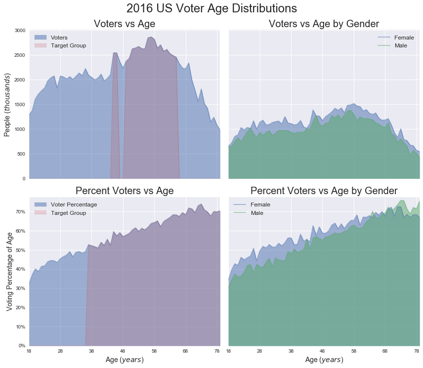
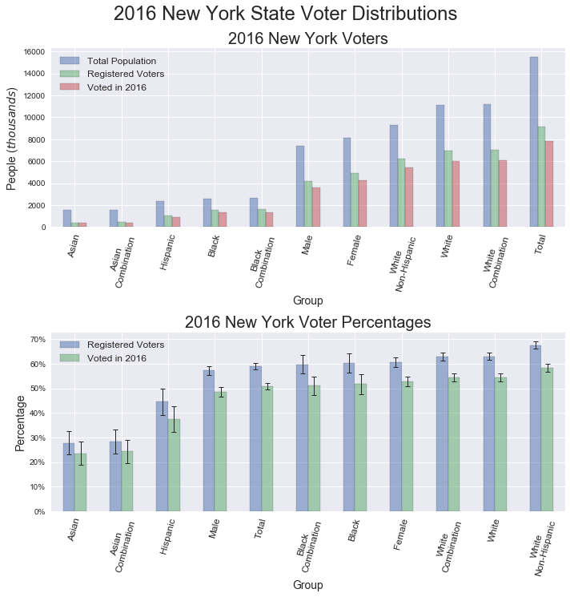

New York City Signature Locations

For this project we are going to place ourselves in the following scenario:
A factious non-profit group called NYC Change (NYC2), has contacted our consulting firm to help them obtain signatures for a petition. With enough signatures, our client will get their issue on an upcoming ballot to let the power of the people weigh in on their cause. NYC2 has a group of eager volunteers lined up to hit the streets and engage the throngs of cheery New Yorkers! Wanting to get the most out of their limited man power, our task is to identify locations and people groups in the city where the engaged citizens will have a predisposition to participate in the democratic process.
The stakes are high here!
If the volunteers fail to pull in enough signatures, we'll be out on the street corner. So with the stage set, let's get to it and help NYC2 make a difference.
If you would like to investigate any of the datasets used for this project, check out the data files section below.
Links to all the source code and the project's Notebook are also available.
To solve any problem, you need a game plan, and the following steps are how we're going to determine a solution for NYC2:
Who would want to take time out of their busy day to listen for a minute or two and join a cause? I'm willing to bet that people that voted in the last election would.
As a starting place, let's look at the voting demographics dataset supplied by the US Census Bureau. The plot below provides a breakdown of people in the country reported to have voted in 2016.
Statistics are also presented by the Census Bureau for people who stated they did not vote, and those who chose to not disclose whether they voted. By focusing our attention on the group that chose to report they voted, we are evaluating a known quantity and selecting a group that was proud to have voted. Both of these factors should contribute to acquiring more signatures on the petition.
Here are a couple of key points to notice from the data:
The Census Bureau also supplies an additional dataset based only on the voter turnout for New York State. The attributes of this dataset are more focused on people groups than age like the National data above.
Since the total population for each group is supplied by normalizing the positive voters, we should be able to give our volunteer a ranked order of whom to pursue.
The key points from this dataset are the following:
After analyzing the 2016 voter turnout statistics, we can now define target groups for the volunteers to engage.
Remember that the only features that make the target groups more desirable is the increased probability of having voted in the past.
For the decade of my twenties I probably went to a hospital only a handful of occasions. Now that I'm older and wiser, I go quite often, and you know who else is there? Patients in the exact age demographic that we are targeting.
To find the hospitals in New York City, I scraped names from this Wikipedia site. After employing some modern day hieroglyphics, also known as regular expressions, I had a list of all the current hospital names. Then I used the Python package geocoder to obtain the Latitude and Longitude values of the hospitals. The interactive graphic below displays all the hospitals I found in the city, demarcated with crimson circles. If you hover over a specific location, the name of the hospital will be displayed as a tool tip. To investigate the surrounding area of a hospital, activate the zoom tool on the left.
The next two maps show subway locations marked with blue diamonds and hospitals shown in crimson circles. Now we're starting to hone in on ideal canvasing sites.
By filtering based on the shortest distance from a subway station to a hospital, the potential target locations are now identified in the following map. Now we just need to supply suggested times for the volunteers to descend upon the subway locations.
The Metropolitan Transportation Authority (MTA) provides subway turnstile usage on a weekly basis here . While interacting with these data files, I found the most recent week's content could have partial entries. I'm sure it's convenient for the majority of users interested in the subway statistics to have this instant incremental supply of updates, but for our situation the empty future values skew the results. The default time period I choose to evaluate was the first full week of available data and the following four weeks after. If you choose to run the supplied code, be aware that the time period will be different. Supplying the dates of 2017-05-13 to 2017-06-10, you will be able to recreate the same results shown here.
After analyzing the turnstile entrance values for the target locations, it is clear there are three main subway stations that receive a larger volume of passengers. In an attempt to refine our deployment of volunteers in an automated fashion, I chose to select the minimum number of stations that would comprise up to 90% of the total station entrance values to be our top sites of interest. We'll focus our efforts on the following stations.
Would a particular day of the week provide larger volumes of people for us to engage? As it turns out for this scenario, the trains that come to these stations are packed... all the time. This means that any day we chose will be a great day.
I checked, re-checked and re-double checked the values and the scale of billions for the following plot is correct. The shear number of people that ride the subway in New York City is pretty astounding!
Remember we are looking for our target sample of people who had a medical appointment at the hospital near our subway station. The turnstile exit values represent people on their way to an appointment. They could be running late or worried about the outcome of their visit. Being perpetual optimists we are going to wish them the best of luck, which will no doubt, result in all their medical ailments being cured. Now... they have made it to the hospital, completed their business there, and are heading back to the subway to get on with their day. What time is it? Time to get some signatures.
The average turnstile values broken down by day of the week for each station are shown in the following graphics. I chose a window of 9:00am to 5:00pm thinking this would encapsulate the bulk of hospital patrons returning to the subway. Each station yielded a different optimum time as shown in the table below. A 30 minute pad was added to the train departure times to give the volunteers time to work the crowd.
| NYC Subway Station | Day of the Week | Target Time of Day |
|---|---|---|
| Fulton Street | Monday - Friday | 10:30am - 3:00pm |
| Dekalb Avenue | Monday - Friday | 11:30am - 4:00pm |
| 7th Avenue | Monday - Friday | 08:30am - 5:00pm |
We set out to help a company NYC Change (NYC2), determine where to send volunteers in New York City to acquire signatures for a petition.
The results of our study are as follows:
| NYC Subway Station | Day of the Week | Target Time of Day |
|---|---|---|
| Fulton Street | Monday - Friday | 10:30am - 3:00pm |
| Dekalb Avenue | Monday - Friday | 11:30am - 4:00pm |
| 7th Avenue | Monday - Friday | 08:30am - 5:00pm |
I learned a number of new techniques on this project. The most interesting of which was the potential to combine seemingly unrelated genres of information into a meaningful insightful composite. Thanks for reading.
The following data files were used in the project.
| Data File | Original Source |
|---|---|
Metropolitan Transportation Authority (MTA) |
MTA Website
Subway Turnstile Usage
|
New York City Hospitals |
Wikipedia
NYC Hospital Names And Locations
|
New York State Subway Stations |
DATA.GOV
NYC Transit Subway Entrance And Exit Data
|
2016 State Voter Data |
United States Census Bureau
2016 Voter Data Table 4b
|
2016 United States Voter Data |
United States Census Bureau
2016 Voter Data Table 1
|
Jupyter Notebook
Follow this link to view the project's notebook.
Python Modules
Follow this link to view the project's modules.
Note:
To create the geographic plots a
Google API Key
is required.
The key is easy to obtain, but make sure to not share your
key.
For more details check out Google's site.
This study was completed using the Anaconda distribution of Python 3.6.1.